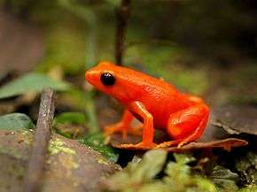

Mantella Aurantiaca


C’est une espèce endémique de Madagascar appartenant à la classe des amphibiens.
Cette espèce se localise en général dans les environs de Moramanga, plus précisément à Andasibe .
En général, le Mantella Aurantiaca mesure dans les 23mm les mâles et 30mm les femelles ; La coloration de cette espèce est vert olive avec des taches sombres sur le dos et des barres transversales sur les membres postérieurs pour les juvéniles et rouge-orangé ou jaune orangé pour les adultes ; L’autre caractéristique de cette espèce c’est sa peau fine, tellement fine que certains organes sont facilement apercevable...